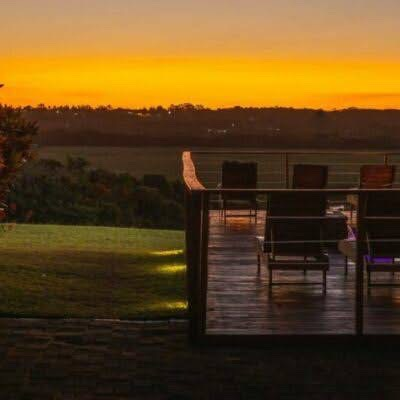
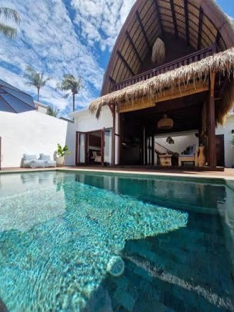

Welcome to Zulu Sunset Lodge
Authentic Zulu hospitality, comfortable accommodation and unforgettable experiences in KwaZulu-Natal.
Explore Our Suites
A place to relax, connect and experience
Our cultural boutique lodge combines modern comfort with Zulu-inspired design, warm hospitality and memorable experiences.
From peaceful accommodation and indigenous gardens to cultural evenings, dining and events, there is something for every guest.
Discover Our StoryStay Your Way
Choose from comfortable suites and private villas designed for a relaxing escape.


Experiences
Enjoy cultural, dining, wellness and event experiences during your stay.
Zulu Cultural Evening
Boma dinner, dance performance and traditional storytelling.
Sunset Experience
Relax and enjoy the changing colours of the evening sky.
Weddings & Events
Celebrate special occasions in an African-inspired setting.
